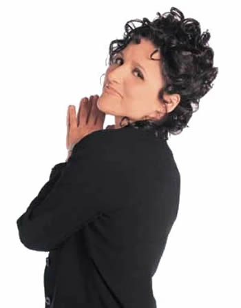

About Elaine Benes
Elaine Benes is one of Jerry Seinfeld's best friends. She is also warm and fuzzy with George and Cosmo Kramer as well, mainly by association. His strongest friendship, by far, is that with Jerry. As Jerry’s ex-girlfriend, Elaine knows him well and adds a good dimension to the show that allows the viewer to better understand Jerry and the rest of the characters on Seinfeld.
Normally one to be assertive, confident and intelligent, Seinfeld Elaine still has those loveable Elaine“Seinfeldesque” qualities that make her a long-standing favorite character. For instance, Elaine doesn’t take baloney from anybody. She’s very firm in her beliefs and she’s proud of it. Elaine is edgy, superficial, and, well, she’s neurotic too. At the end of the day, she simply cannot help it. There’s a little neurotic behavior in all of us—that’s why Elaine is so easily relatable, especially by female viewership. A prominent quirk is Elaine’s serial dating. More or less, Elaine does not settle. That’s why she’s constantly allowing people in and out of her life—with confidence and humor, albeit a little bittersweet. Elaine (Seinfeld episode “The Stall”) demonstrates her knack for the vain. When her boyfriend Tony gets into a rock climbing accident and mangles his face, she admits to Jerry she simply cannot date him any longer.
Famous Elaine Quotes
- Get Out
- I'll go, if I don't have to talk
- Yada yada yada